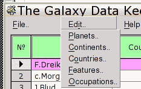

Дл начала - возвращаемся на "mainfo" ( файл "mainform.pas ) .
Чтобы полоса меню не слишком прижималась к заголовку основного окна программы :
Другой шрифт меню, и чуть поменьше размером :
Здесь можете экпериментировать, пока не добьетесь желаемого вида, причем "name" ( название шрифта ) не обязательно выбирать из списка - можно напрямую впечатать ( регист букв не учитывается ) нужное имя, если такой шрифт реально установлен в системе - "Arial", "Times New Roman", "tahoma", и т.п. Изменения будут видны сразу по ходу, поэтому это - хороший способ узнать, какие шрифты видят MSEgui-программы ( точнее, FreeTtype-библиотека )
Теперь увеличим расстояния пунктов меню между собой и границами выпадающего списка пунктов. Роняем на форму компонент GUI->tframecomp :
name:= ftMainMenuPopupItem
и назначает элементам выпадающего списка использовать данные настройки :
Видоизмененое меню выглядит следующим образом ( на моем экране с моими шрифтами ) :
